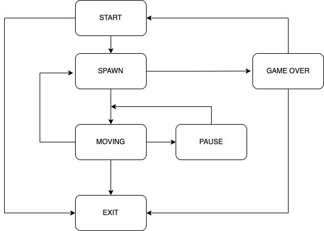

# 🕹️ TETRIS
Console version of the classic game Tetris!
Installation
To install the game
- go to
src directory
- run:
make install
- run:
make run to start the game
To uninstall, run: make uninstall
Finite State Machine Diagram

Features
- Move blocks to the right, left, and down.
- Rotation of the blocks.
- Deleting of full lines.
- 6 types of blocks.
- Display of next block.
- Game over when block reaches the top of the game field.
- Game field 10x20.
Controls:
- Start:
enter.
- Exit:
0.
- Pause:
spacebar.
- Move right:
Right arrow key
- Move left:
Left arrow key
- Move down:
Down arrow key
Score Points and Level Up
Earn points for clearing full lines.
- 1 line - 100 points
- 2 lines - 300 points
- 3 lines - 700 points
- 4 lines - 1500 points
Climb through the levels
Earn 600 points to achieve a new level. Maximum level 10.
Set and Break Record
Highest score saved between runs
Test Coverage
Tests cover 94% for the backend functionality.